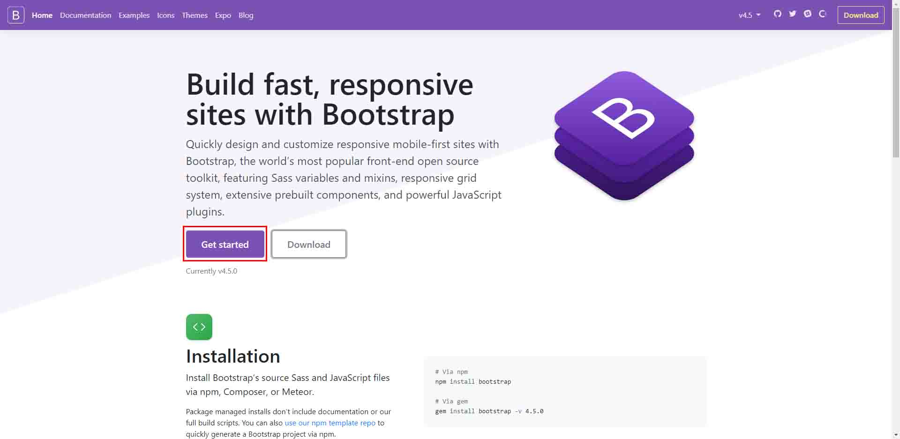
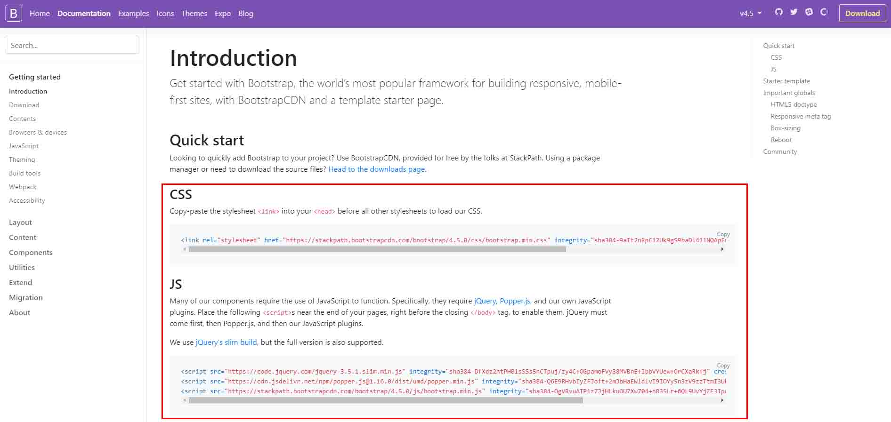

Bootstrap是目前響應式及行動裝置網頁設計，最知名的框架，提供了包含HTML、CSS及JS等內容的框架
避免重複動作，可以應用一些現成的功能
很快就可以應用較複雜的響應式設計
不同開發者可以取得應用及解讀程式碼的一致性
Bootstrap也提供了一些速成樣板
確保跨瀏覽器的閱讀相容性
CSS — bootstrap.css
JavaScript — jquery.js
— popper.js
— bootstrap.js
 
<head> <!-- Bootstrap CSS --> <link rel="stylesheet" href="https://stackpath.bootstrapcdn.com/bootstrap/4.4.1/css/bootstrap.min.css" integrity="sha384-Vkoo8x4CGsO3+Hhxv8T/Q5PaXtkKtu6ug5TOeNV6gBiFeWPGFN9MuhOf23Q9Ifjh" crossorigin="anonymous"> </head> <body> <!-- Optional JavaScript --> <!-- jQuery first, then Popper.js, then Bootstrap JS --> <script src="https://code.jquery.com/jquery-3.4.1.slim.min.js" integrity="sha384-J6qa4849blE2+poT4WnyKhv5vZF5SrPo0iEjwBvKU7imGFAV0wwj1yYfoRSJoZ+n" crossorigin="anonymous"></script> <script src="https://cdn.jsdelivr.net/npm/popper.js@1.16.0/dist/umd/popper.min.js" integrity="sha384-Q6E9RHvbIyZFJoft+2mJbHaEWldlvI9IOYy5n3zV9zzTtmI3UksdQRVvoxMfooAo" crossorigin="anonymous"></script> <script src="https://stackpath.bootstrapcdn.com/bootstrap/4.4.1/js/bootstrap.min.js" integrity="sha384-wfSDF2E50Y2D1uUdj0O3uMBJnjuUD4Ih7YwaYd1iqfktj0Uod8GCExl3Og8ifwB6" crossorigin="anonymous"></script> </body>
|
Grid 12欄位概念 斷點概念(xs sm md lg) |
Carousel slides controller indicator |
|
Nav nav-item / nav-link navbar-toggler |
Modals dialog content(head/body/footer) |
|
Form 各種表單型態 |
Jumbotron |